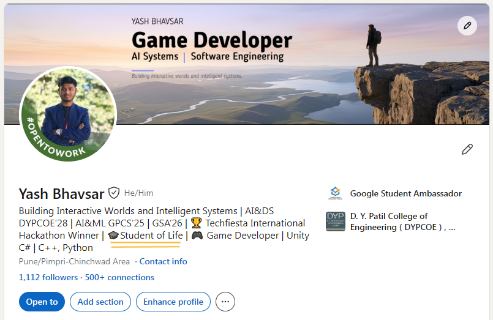

Student of Life: Being a Continuous Learner
School & college taught us that learning is boring. Here’s why I’m choosing to unlearn that.
Think about the word “learning.” What picture comes to your mind first? For most of us, it’s a classroom. A thick book. A pen running out of ink. An exam hall where everyone is quiet and nervous. 🏫
We spend many years in schools and colleges studying one subject after another, and somewhere along the way we quietly make a decision without noticing it: learning is boring work. Read it, write it, repeat it, take the test, forget it. We do all this without much interest, because we have to.
I think this is one of the biggest things school gets wrong. Nobody teaches us this on purpose. It just slowly becomes a habit: learning equals boring.
THE PROBLEMThe “only when it’s compulsory” trap 🙅♂️
The problem begins when the classroom ends.
Once we link learning with boredom, we stop learning in our daily life. A new skill, a new tool, a new subject: our first answer is “no,” unless it becomes absolutely necessary. Until the deadline comes. Until the exam is tomorrow. Until the job asks for it.
Waiting for a “must” before we learn is a poor way to live. Learning is the one skill that makes every other skill possible, and we treat it like a punishment.
I didn’t understand how big this problem is until I saw it up close, in a place where there was no time to hide from it.
THE STORYA hackathon, six people, and one restaurant ⏱️
It was around the even semester of my 2nd year of degree. Some of my old diploma friends from the Computer and IT department invited me to join their hackathon team.
If you’ve never heard of one, a hackathon is a contest where teams build a working product in a very short time. Ours gave us 24 hours. One day, one night, and a list of requirements the judges would check at the end.
We were a team of six, split into three pairs:
- two people on backend
- two people on frontend
- two people on ML (the “smart” part of the project)
I was in the backend pair, along with Tanishq. The frontend pair was Harsh and Kartik.
Here’s the easiest way to understand those roles. Imagine a restaurant:
- The frontend is the dining area. It’s what the customer sees: the menu, the tables, the look and feel.
- The backend is the kitchen. The real work happens there, and the customer never sees it.
- The “doors” between them, where the waiter takes an order to the kitchen and brings the food back, are called API endpoints.
- The ML side is like a clever chef who decides things using patterns and data. 🤖
My job was to build the kitchen, which meant the endpoints and the connection to the database, where all our information was stored. Harsh and Kartik were good at the dining area. They built the screens of the app, and they did it well.
THE WALLThe wall 🧱
Here’s where things got stuck.
My kitchen was ready. I had given Harsh and Kartik everything they needed: the list of doors, and the details of how to knock on each one. In simple words, I had handed them the order form.
But the dining area and the kitchen still weren’t talking to each other. They had never worked with a backend before, so they didn’t know how to send a request from their screens to my endpoints, get the data back and show it on the app.
The hours were going by, and the clock was loud.
I helped them, of course. We sat together and I walked them through it step by step until their screens finally started showing real data. The work got done.
But I’ll be honest with you. I was a little annoyed. 😤
My feeling was not “why are you so slow?” It was closer to: you could have figured this out. The information was all there. The doors were listed, and the way to knock was explained. If they had tried, searched and experimented on their own, I could have spent that time building more of the backend, and helping Tanishq, who had his own hard problems.
In a 24-hour contest, every hour I spent teaching was an hour I didn’t spend building.
THE ONE WHO DID ITThe one who just did it 💪
And then there was Tanishq.
Tanishq had no previous experience with the backend technology we were using. He also had no experience with React, which is the tool we used to build our real-time dashboard, the live screen that updates by itself as new information comes in.
He had every right to say, “I’ve never done this, give it to someone else.”
He didn’t say that. He sat down, figured it out, and built the backend work he had taken on and the whole real-time dashboard himself. Nobody had to hold his hand.
his learning gave my time back.Because of that, I had the room to focus on other parts of the project. That space is the real gift one person’s attitude gives the whole team.
By the end of the 24 hours we had completed every requirement the judges had asked for. 🏆
THE LESSONNobody was wrong. Nobody was right.
I want to be very clear about something, because I’ve thought about this for a long time: no one in this story was the bad guy.
Harsh and Kartik are talented. Their frontend was good, and it’s exactly the kind of work that makes a project feel real. They weren’t lazy, and they weren’t careless. They simply weren’t in the habit of reaching beyond what they already knew, because for most of us, that was never encouraged. In school, we’re told to stay inside the syllabus.
Tanishq wasn’t a genius either. He didn’t know more than they did when he started. He had the same blank start, the same unfamiliar tools and the same ticking clock.
The only difference was his approach to learning: if I need it, I’ll learn it, right now.
That’s the whole point of this post. It isn’t about who is better. It’s about which mindset we want to build in ourselves.
THE HABIT“We can’t do this” 💻
I’ve seen smaller versions of this story many times among my friends.
Someone learns a tech stack, a set of tools for building things. They get comfortable and stay inside it forever. Then a project needs something slightly different, or a simple task comes up that’s a step outside their comfort zone. And the answer is often:
“We can’t do this.”
But if you look closely, that sentence is almost never true. What they mean is “I haven’t done this yet.” And the gap between “can’t” and “haven’t yet” is usually much smaller than it looks. Often it’s a weekend of trying, a few tutorials and a couple of errors that make you want to throw your laptop. 🙃
Think about it: the people who build impressive things aren’t born knowing every tool. They’re just the ones who didn’t say no first.
THE METHODThe best teacher is the thing itself 🔧
There’s a line I keep going back to. Someone once said:
Actually doing a thing is the best way to learn it. 💯 — a line I keep coming back to
I’ve found it true again and again. Reading about swimming doesn’t teach you to swim. Watching ten videos on cooking doesn’t make the dish taste right. We think we’ve understood something because it made sense while we were reading. But real understanding comes in the first moment something breaks and we have to fix it.
Tanishq proved it to me. He wasn’t “ready” for that task. He became ready by doing it. And honestly, so did every one of us at that hackathon, in different ways.
So I believe we should be able to adapt to whatever comes our way. If we need to learn something new, or work with a technology we’ve never touched, we should do it without hesitation. Not because it’s easy, but because that’s how we grow. 🌱
THE DESKThe desk where it happens
Since we’re talking about doing, here’s my corner. This is my desk at the hostel, with a new cup from GDGC added to it. ☕
It’s not fancy. But it’s where a lot of my “I’ll figure it out” moments happen.
THE WHYNot just for marks. Not just for jobs. 🧠
So what is the point of learning, if not for good marks or a good job?
Let me be honest: those are real reasons, and I’m not going to pretend otherwise. We all want to do well, and we all need to earn. There’s nothing wrong with that.
But if those are the only reasons, then something strange happens. The moment the exam is over, we stop learning. The moment the job is secured, we stop growing. We end up using a tiny part of what we’re capable of, and we call it “enough.”
That’s why my mindset is simple: I want to learn things, but not only to score high, and not only to get hired. I want to learn because understanding things makes life bigger. Because there’s a quiet joy in being able to say, “I couldn’t do this last month, and now I can.” ✨
THE IDENTITYWhy my profile says “Student of Life” 🎓
If you’ve seen my LinkedIn, you may have noticed that I describe myself as a Student of Life.

I wrote that on purpose, and I mean it fully. I believe we should remain students for our whole life. Not just in technical skills, but in every area: experiencing new things, trying new things, being a beginner again and again. Cooking, music, philosophy, a new language, how to handle people, how to handle ourselves. 💫☀️
Being a beginner doesn’t feel great. You look clumsy. You make mistakes. You can’t skip the awkward part. But it’s the only road that leads anywhere new.
And the good news is that you don’t need a classroom for any of it. You don’t need permission, and you don’t need an exam at the end. All you need is curiosity, and the willingness to say “let me try.”
BEFORE YOU GOOne small word
Next time you hear yourself say “I can’t do this,” pause for a second and add one small word at the end: “I can’t do this… yet.”
Then open the tool, read the first page, break the first thing and fix it. You’ll be surprised how fast “can’t” turns into “I did.”
You should be a lifelong learner. You should be a lifelong student. 🎓
— Yash